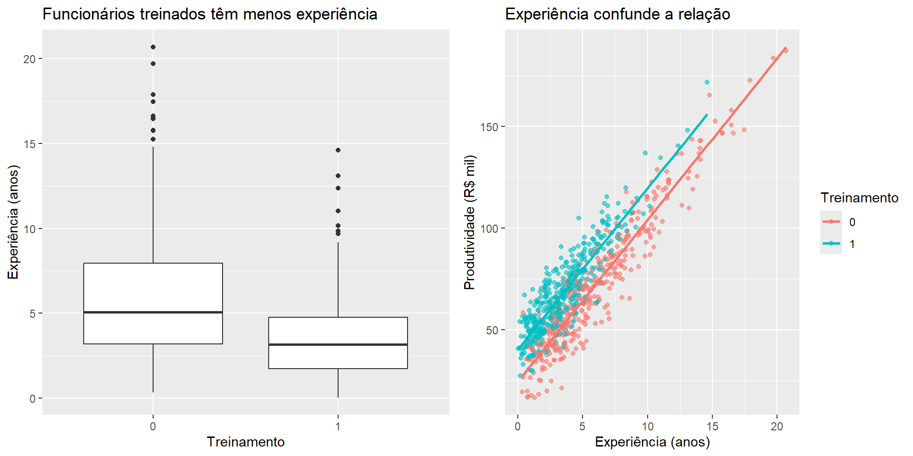

Pergunta de pesquisa: Programas de treinamento corporativo aumentam a produtividade dos funcionários?
Variáveis: - Y: Produtividade mensal (R$ mil) - D: Participação em treinamento (0/1) - X: Experiência no cargo (anos)
Por que Experiência é um Confounder?
Definição: Um confounder é uma variável que afeta tanto o tratamento quanto o resultado.
No nosso exemplo:
Experiência → Treinamento: Funcionários inexperientes são mais enviados para treinamento
Experiência → Produtividade: Funcionários experientes são naturalmente mais produtivos
Conclusão: não levar em conta o confounder (experiência) causa endogeneidade (viés de variável obtida).
Simulação do Problema
library(tidyverse)library(MatchIt)library(Matching)library(knitr)library(kableExtra)set.seed(123)n <-800# Gerar dados com confounding negativodados <-tibble(# Experiência (confounder)experiencia =pmax(0, rgamma(n, shape =2, rate =0.4)),# Probabilidade de treinamento (maior para inexperientes)prob_treinamento =plogis(1.5-0.3* experiencia),treinamento =rbinom(n, 1, prob_treinamento),# Produtividade (depende de experiência E treinamento)# Efeito verdadeiro do treinamento: +15 milprodutividade =25+8* experiencia +15* treinamento +rnorm(n, 0, 10)) %>%mutate(produtividade =pmax(5, produtividade))# Estatísticas por grupodados %>%group_by(treinamento) %>%summarise(n =n(),experiencia_media =round(mean(experiencia), 1),produtividade_media =round(mean(produtividade), 1),.groups ="drop" ) %>%mutate(grupo =c("Sem Treinamento", "Com Treinamento")) %>% dplyr::select(grupo, everything(), -treinamento) %>%kable()
grupo
n
experiencia_media
produtividade_media
Sem Treinamento
383
5.9
71.6
Com Treinamento
417
3.5
68.1
O Problema Revelado
# Análise ingênua (INCORRETA)diferenca_ingenua <- dados %>%group_by(treinamento) %>%summarise(prod_media =mean(produtividade)) %>%summarise(diferenca =diff(prod_media)) %>%pull(diferenca)cat("Efeito aparente (sem controles):", round(diferenca_ingenua, 1), "mil reais \n")
Efeito aparente (sem controles): -3.5 mil reais
cat("Efeito verdadeiro (por construção): +15.0 mil reais \n")
Efeito verdadeiro (por construção): +15.0 mil reais
cat("Conclusão errônea: 'Treinamento não funciona!'")
Conclusão errônea: 'Treinamento não funciona!'
Visualização do problema:
p1 <- dados %>%ggplot(aes(x =factor(treinamento), y = experiencia)) +geom_boxplot() +labs(title ="Funcionários treinados têm menos experiência",x ="Treinamento", y ="Experiência (anos)")p2 <- dados %>%ggplot(aes(x = experiencia, y = produtividade, color =factor(treinamento))) +geom_point(alpha =0.6) +geom_smooth(method ="lm", se =FALSE) +labs(title ="Experiência confunde a relação",x ="Experiência (anos)", y ="Produtividade (R$ mil)",color ="Treinamento")library(gridExtra)
Warning: pacote 'gridExtra' foi compilado no R versão 4.4.3
Anexando pacote: 'gridExtra'
O seguinte objeto é mascarado por 'package:dplyr':
combine
grid.arrange(p1, p2, ncol =2)
`geom_smooth()` using formula = 'y ~ x'

2. Como o Pareamento Corrige o Problema
Intuição Básica
Ideia central: Comparar funcionários similares que diferem apenas no tratamento.
Estratégia:
Encontrar funcionários com mesma experiência
Alguns receberam treinamento, outros não
Calcular diferença na produtividade
Framework de Resultados Potenciais
Para cada funcionário \(i\):
\(Y_i^1\): produtividade se recebe treinamento
\(Y_i^0\): produtividade se não recebe treinamento
Interpretação: Condicionalmente à experiência, a seleção para treinamento é “como se fosse” aleatória.
Demonstração: Subclassificação Manual
A subclassificação consiste em estimar o efeito do tratamento pela soma da diferença ponderada entre tratados e controles. A ponderação permite lidar com o problema de “covariates imbalance” (diferença na distribuição dos X’s entre os grupos).
# Criar 4 estratos de experiência (simplificado)dados <- dados %>%mutate(estrato_exp =case_when( experiencia <2~"Muito Inexperiente", experiencia <4~"Inexperiente", experiencia <7~"Intermediário",TRUE~"Experiente" ))# Verificar distribuição dos estratosdados %>%count(estrato_exp, treinamento) %>%pivot_wider(names_from = treinamento, values_from = n, names_prefix ="treinamento_") %>%kable(col.names =c("Estrato", "Sem Treinamento", "Com Treinamento"))
Estrato
Sem Treinamento
Com Treinamento
Experiente
126
28
Inexperiente
98
140
Intermediário
117
127
Muito Inexperiente
42
122
# Calcular efeito dentro de cada estratoefeitos_por_estrato <- dados %>%group_by(estrato_exp) %>%summarise(n =n(),n_tratados =sum(treinamento),n_controles =sum(1- treinamento),efeito =mean(produtividade[treinamento ==1]) -mean(produtividade[treinamento ==0]),.groups ="drop" )efeitos_por_estrato %>%kable(digits =2, col.names =c("Estrato", "N Total", "N Tratados", "N Controles", "Efeito (R$ mil)"))
cat("Agora recuperamos algo próximo do efeito verdadeiro")
Agora recuperamos algo próximo do efeito verdadeiro
Nesse caso estamos calculando o ATE a partir de 4 estratos da nossa amostra:
A: Inexperiente
B: Experiente
C: Intermediário
D: Muito Inexperiente
O calculo do ATE foi baseado na soma ponderada de cada estrato da amostra:
\[
ATE =
\left ( \bar{Y}^{1,A} - \bar{Y}^{0,A} \right ) \frac{N^{A}}{N} +
\left ( \bar{Y}^{1,B} - \bar{Y}^{0,B} \right ) \frac{N^{B}}{N} +
\left ( \bar{Y}^{1,C} - \bar{Y}^{0,C} \right ) \frac{N^{C}}{N} +
\left ( \bar{Y}^{1,D} - \bar{Y}^{0,D} \right ) \frac{N^{D}}{N}
\] Imagine que exista outro confundidor: o regime de trabalho. Os trabalhadores CLT são mais engajados em participar do treinamento, mas tendem a ser menos produtivos. Já os trabalhadores PJ são menos engajados em participar do treinamento, mas tendem a ser mais produtivos.Nesse casos, considerando as classificações de experiencia e de regime de trabalho, temos 8 estratos:
A1: Inexperiente e CLT
A2: Inexperiente e PJ
B1: Experiente e CLT
B2: Experiente e PJ
C1: Intermediário e CLT
C2: Intermediário e PJ
D1: Muito Inexperiente e CLT
D2: Muito Inexperiente e PJ
A medida que as variáveis de controle aumentam, começamos a ter dificuldade em colocar cada unidade (tratada ou não) em uma “caixinha” do X’s. Se a variável confundidora não for discreta (e.g. experiência em anos) a dificuldade aumenta.
Nesses casos, estimar o ATT pode ser mais fácil. Por exemplo, digamos que você não consegue colocar todas as unidades tratadas em um estrato, mas consegue colocar todas do grupo de controle. Logo, para cada estrato de unidade tratada você poderá construir um contrafactual (mas você não conseguirá um contrafactual par a grupo controle).
\[
ATT = \sum^{K}_{k=1}
\left ( \bar{Y}^{1,k} - \bar{Y}^{0,k} \right ) \frac{N^{k}_{T}}{N_{T}}
\] Este problema causado pela dimensionalidade é um problema de suporte comum. Alternativamente, se preenchêssemos o resultado potencial ausente para cada unidade de tratamento usando uma unidade do grupo de controle que fosse “mais próxima” da unidade do grupo de tratamento para algum fator de confusão, poderíamos simplesmente calcular a média das diferenças. Esse método é conhecido como pareamento.
3. Principais Tipos de Pareamento
3.1 Pareamento Exato
Definição: Parear unidades com valores idênticos das covariáveis.
Vantagens: - Transparente e fácil de entender - Balance perfeito por construção - Não requer suposições funcionais
Desvantagens: - Maldição da dimensionalidade - Perda de observações - Só funciona com covariáveis categóricas
3.2 Pareamento Aproximado
Motivação: Quando pareamento exato não é viável, pois tenho covariadas contínuas ou um conjunto de covariadas.
O estimador do paraemento “1 para 1” é definido por: \[
ATT = \frac{1}{N_{T}}\sum_{d_{i}=1}\left (Y_{i} - Y_{j(i)} \right )
\] Em que a unidade \(j\) é a unidade do grupo controle “mais próxima em termos de X” da unidade \(i\) do grupo tratado. Este estimador computa o ATT, pois a média é condicional a \(d_{i}=1\).
Se no grupo controle encontrarmos mais de uma unidade parecida com a unidade tratada em termos dos Xs, podemos usar a média.
dados$numeric_estrato_exp <-as.numeric(as.factor(dados$estrato_exp))M1_att <-Match(Y = dados$produtividade, Tr = dados$treinamento, X = dados$experiencia,M =1,estimand='ATT')summary(M1_att) # The default estimate is ATT here
Estimate... 15.406
AI SE...... 0.94063
T-stat..... 16.379
p.val...... < 2.22e-16
Original number of observations.............. 800
Original number of treated obs............... 417
Matched number of observations............... 417
Matched number of observations (unweighted). 600
Perceba que: o tratado 3 pareou com o controle 8, o tratado 4 com o controle 388, etc. Vamos definir um M=3.
M3_att <-Match(Y = dados$produtividade, Tr = dados$treinamento, X = dados$experiencia,M =3,estimand='ATT')summary(M3_att) # The default estimate is ATT here
Estimate... 15.244
AI SE...... 0.84785
T-stat..... 17.98
p.val...... < 2.22e-16
Original number of observations.............. 800
Original number of treated obs............... 417
Matched number of observations............... 417
Matched number of observations (unweighted). 1303
Perceba que: o tratado 3 pareou com o controle 8, 594 e 690; o tratado 4 com o controle 365, 388 e 425, etc. Vamos definir um M=3.
É possível calcular o ATE usando o pareamento. O estimador é dado por: \[
ATE = \frac{1}{N}\sum_{i=1}^{N} (2D_{i}-1) \left (Y_{i} - \left [\frac{1}{M} \sum^{M}_{m=1} Y_{j_{m}(i) } \right ] \right )
\] Quando \(D_{i}=1\), então esse termo principal se torna 1. E quando \(D_{i}=0\), então esse termo principal se torna -1, e os resultados invertem a ordem para que a observação do tratamento possa ser imputada.
M3_ate <-Match(Y = dados$produtividade, Tr = dados$treinamento, X = dados$experiencia,M =3,estimand='ATE')summary(M3_ate) # The default estimate is ATT here
Estimate... 14.814
AI SE...... 0.84969
T-stat..... 17.434
p.val...... < 2.22e-16
Original number of observations.............. 800
Original number of treated obs............... 417
Matched number of observations............... 800
Matched number of observations (unweighted). 2536
Quando temos muitas covariadas, podemos usar um criterio para medir a distancia entre elas e definir um caliper
Maha_att <-Match(Y = dados$produtividade, Tr = dados$treinamento, X = dados$experiencia,caliper = .25,Weight =2, #mahalanobisestimand='ATT')summary(Maha_att) # The default estimate is ATT here
Estimate... 15.406
AI SE...... 0.94063
T-stat..... 16.379
p.val...... < 2.22e-16
Original number of observations.............. 800
Original number of treated obs............... 417
Matched number of observations............... 417
Matched number of observations (unweighted). 600
Caliper (SDs)........................................ 0.25
Number of obs dropped by 'exact' or 'caliper' 0
Distância Euclidiana
Conceito: Distância “em linha reta” no espaço multidimensional.
Quando usar: Múltiplas covariáveis correlacionadas.
O caliper define o limite máximo de distância para aceitar um pareamento. É como um “raio de busca” - só forma pares dentro desse raio.
3.3 Propensity Score Matching
Ideia revolucionária (Rosenbaum & Rubin, 1983): Reduzir dimensionalidade usando probabilidade de tratamento.
Propensity Score: \(e(X) = P(D = 1 | X)\)
Teorema: Se \((Y^1, Y^0) \perp D | X\), então \((Y^1, Y^0) \perp D | e(X)\)
Passos do Propensity Score Matching:
Estimar propensity score
Verificar overlap
Fazer pareamento
Verificar balance
Estimar efeito
O que é Balance? *Balance significa que os grupos tratado e controle têm distribuições similares das covariáveis após o pareamento.
Objetivo: Se conseguimos balance perfeito, as únicas diferenças entre os grupos serão devido ao tratamento, não aos confounders.
*|Diff.Adj| < 0.1: Excelente balance
# Passo 1: Estimar propensity scoreps_model <-glm(treinamento ~ experiencia +I(experiencia^2), data = dados, family = binomial)X <- ps_model$fittedY <- dados$produtividadeTr <- dados$treinamento# Passo 2: Verificar overlapdados$pscore <-predict(ps_model, type ="response")dados %>%ggplot(aes(x = pscore, fill =factor(treinamento))) +geom_histogram(alpha =0.7, position ="identity", bins =25) +labs(title ="Distribuição dos Propensity Scores",x ="Propensity Score", y ="Frequência",fill ="Treinamento") +theme_minimal()
# Passo 3: Fazer pareamentorr <-Match(Y=Y, Tr=Tr, X=X, M=1);summary(rr)
Estimate... 15.281
AI SE...... 0.9384
T-stat..... 16.284
p.val...... < 2.22e-16
Original number of observations.............. 800
Original number of treated obs............... 417
Matched number of observations............... 417
Matched number of observations (unweighted). 571
Warning in ks.test.default(...): O valor-p será aproximado na presença de
empates
Warning in ks.test.default(...): O valor-p será aproximado na presença de
empates
***** (V1) experiencia *****
Before Matching After Matching
mean treatment........ 3.5041 3.5041
mean control.......... 5.9115 3.5064
std mean diff......... -106.34 -0.10125
mean raw eQQ diff..... 2.4243 0.01421
med raw eQQ diff..... 1.9071 0.0079278
max raw eQQ diff..... 7.3303 0.29034
mean eCDF diff........ 0.20697 0.0025845
med eCDF diff........ 0.23461 0.0017513
max eCDF diff........ 0.3012 0.015762
var ratio (Tr/Co)..... 0.37858 1.0009
T-test p-value........ < 2.22e-16 0.14818
KS Bootstrap p-value.. < 2.22e-16 1
KS Naive p-value...... 3.7114e-16 1
KS Statistic.......... 0.3012 0.015762
***** (V2) I(experiencia^2) *****
Before Matching After Matching
mean treatment........ 17.391 17.391
mean control.......... 48.447 17.403
std mean diff......... -134.36 -0.050585
mean raw eQQ diff..... 31.299 0.099713
med raw eQQ diff..... 15.674 0.04658
max raw eQQ diff..... 234.91 5.9291
mean eCDF diff........ 0.20697 0.0025845
med eCDF diff........ 0.23461 0.0017513
max eCDF diff........ 0.3012 0.015762
var ratio (Tr/Co)..... 0.14395 0.99165
T-test p-value........ < 2.22e-16 0.56036
KS Bootstrap p-value.. < 2.22e-16 1
KS Naive p-value...... 3.7114e-16 1
KS Statistic.......... 0.3012 0.015762
Before Matching Minimum p.value: < 2.22e-16
Variable Name(s): experiencia I(experiencia^2) Number(s): 1 2
After Matching Minimum p.value: 0.14818
Variable Name(s): experiencia Number(s): 1